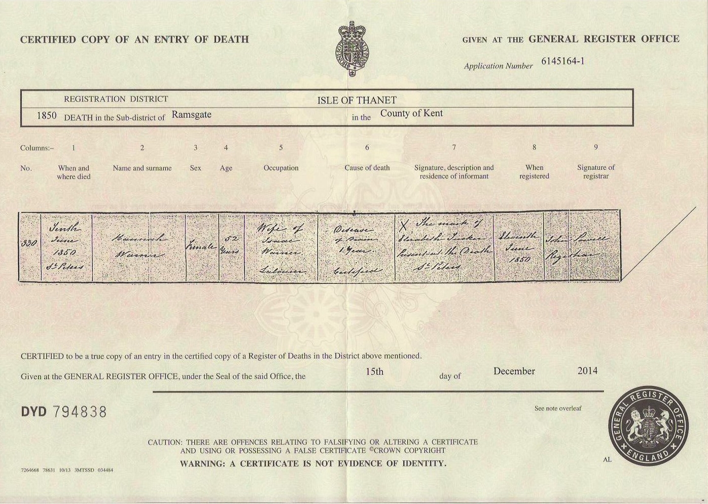
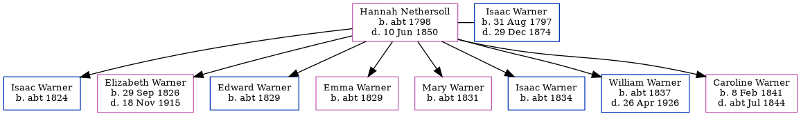

Hannah Warner (née Nethersoll) c1798 - 1850
[ Home ] | [ Calendar ] | [ Surnames Index ] | [ Family History ]Hannah Nethersoll, the 3 times great-grandmother of <a href="I1.html">Nigel Horne</a>, was born in Kent, England <i>c.</i> 1798<span class="citation">1,2</span> and married Isaac Warner (a laborer with whom she had 8 children: <a href="I1564.html">Isaac</a>, <a href="I157.html">Elizabeth Ann</a>, <a href="I1562.html">Edward</a>, <a href="I1929.html">Emma J</a>, <a href="I1563.html">Mary Ann</a>, <a href="I1930.html">Isaac</a>, <a href="I1565.html">William Robert</a> and <a href="I1566.html">Caroline</a>) in St Peters, Thanet, Kent on Nov 8, 1823<span class="citation">5</span>. On Jun 6, 1841, she lived at Callis Court, St Peters, Thanet, Kent<span class="citation">7</span>. <p>She died on Jun 10, 1850 in St Peters, Thanet, Kent<span class="citation">3,4</span> and was buried there on Jun 16, 1850 (Age 52 at burial; KFHS CD29)<span class="citation">6</span>.
Children
- Isaac was born c. 1824
- Elizabeth Ann was born on Sep 29, 1826
- Edward was born c. 1829
- Emma J was born c. 1829
- Mary Ann was born c. 1831
- Isaac was born c. 1834
- William Robert was born c. 1837
- Caroline was born on Feb 8, 1841
Citations
- 1841 England Census Online publication - Provo, UT, USA: The Generations Network, Inc., 2006.Original data - Census Returns of England and Wales, 1841. Kew, Surrey, England: The National Archives of the UK (TNA): Public Record Office (PRO), 1841. Data imaged from the National
- Kent, Canterbury Archdeaconry burials 1538-1988 - Findmypast
- England & Wales deaths 1837-2007 - Findmypast
- England & Wales, FreeBMD Death Index: 1837-1915 Online publication - Provo, UT, USA: The Generations Network, Inc., 2006.Original data - General Register Office. England and Wales Civil Registration Indexes. London, England: General Register Office. © Crown copyright. Published by permission of the Cont
- England Marriages 1538-1973 - Findmypast
- Kent Burials - Findmypast
- 1841 England, Wales & Scotland Census - Findmypast (was age 40)
Media
Hannah Nethersell - death certificate

Kent, Canterbury Archdeaconry burials 1538-1988 - GBPRS/CANT/D/95092845
England & Wales deaths 1837-2007 - BMD/D/1850/2/AZ/000774/092
England Marriages 1538-1973 - R_848290727/2
England Marriages 1538-1973 - R_848220539/2
England Marriages 1538-1973 - R_849840146/2
1841 England, Wales & Scotland Census - GBC/1841/0013965176
Family Tree
Generated by Ged2Site. Last updated on Jul 20, 2025